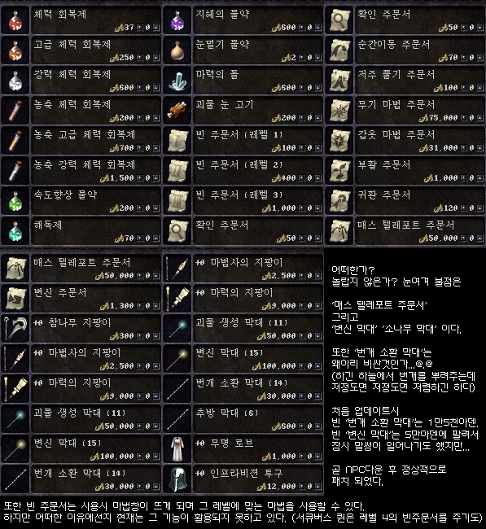
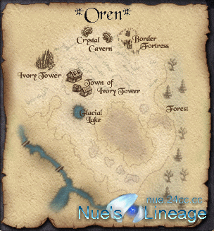

|
2002年6月1日
象牙塔部分NPC售賣道具價格
原文：Lineage Playforum

重要的道具及價格如下：
黑色藥水：2
眼肉：100
魔法卷軸（一級）：100
魔法卷軸（二級）：400
魔法卷軸（三級）：1000
集傳卷：50000
創杖(11)：50000
變杖(15)：100000
電杖(14)：30000
魔法卷軸使用方法
原文：Lineage Playforum
中文翻譯：寶嘉康蒂網站
在象牙塔可以購買到1~3級的空白魔法捲軸，你可以把1~3級魔法寫入這些捲軸，此時需要消耗的 HP/MP 是跟你使用該法術消耗的 HP/MP 一樣的，之後這些魔法捲軸可以提供任何職業使用，而且使用時不需要花費 HP/MP。
而唯一的限制就是法師的等級必須達到8級，可抄寫等級可以參考下面的表格：
|
魔法捲軸等級
|
取得方法
|
抄寫所需等級
|
|
|
象牙塔販賣100，怪物掉落
|
8級
|
|
|
象牙塔販賣400，怪物掉落
|
16級
|
|
|
象牙塔販賣1000，怪物掉落
|
24級
|
|
|
怪物掉落
|
32級
|
|
|
怪物掉落
|
40級
|
歐瑞地區雷達地圖
來源：Nue's Lineage
歐瑞坐落於火龍窟右上方和亞丁地區左上方的交界處
最下面的圖為歐瑞地圖的模樣
地圖英文解說:
Ivory Tower:象牙塔
Town of Ivory Tower:象牙塔村莊
Border Fortress:邊界部落(國界部落)
Crystal Cavern:水晶洞窟
Glacial Lake:冰湖
Forest:森林

韓國測試伺服器6月1日更新內容
原文：韓國天堂官方網站公告
中文翻譯：寶嘉康蒂網站
韓國測試伺服器於5/31更新下列事項。
1. 現在在所有的頭目區和龍區都不行使用瞬移、傳戒、祝福瞬卷、回卷、集傳卷軸，如果想要離開，只有用走出的出去或是死掉再重新開始了。
2. 象牙塔旅館的BUG修正了。
3. 空白魔法捲軸使用的等級調整至等級8。
4. 象牙塔村開始賣地圖了。
5. 頭目級的怪物力量和掉落物品已經確定了。（巴風特、龍、不死鳥、死亡騎士和其它頭目已經比之前要強很多了）
|